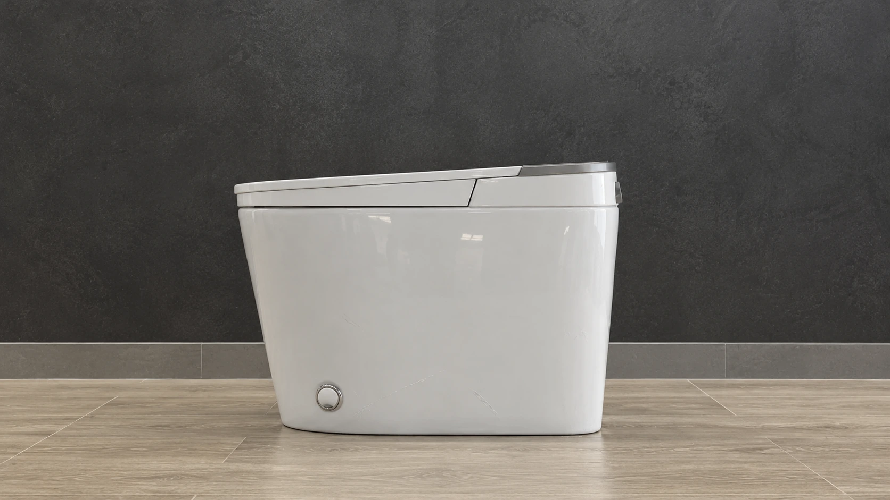
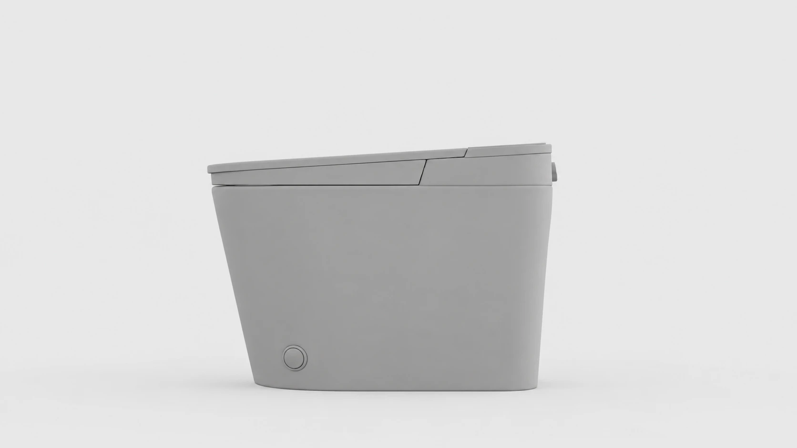
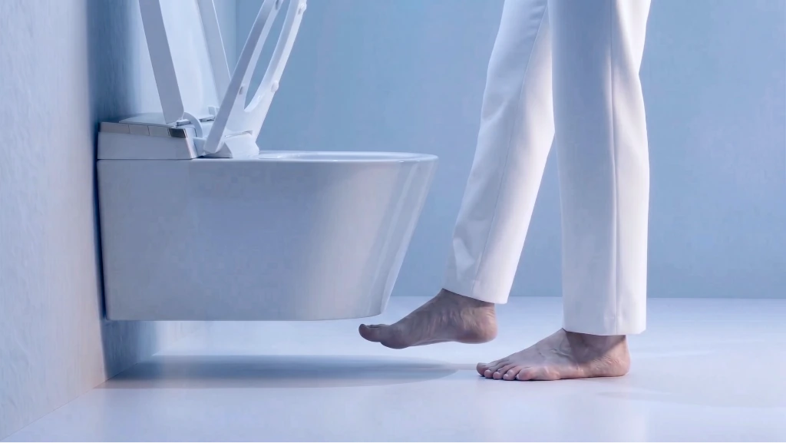
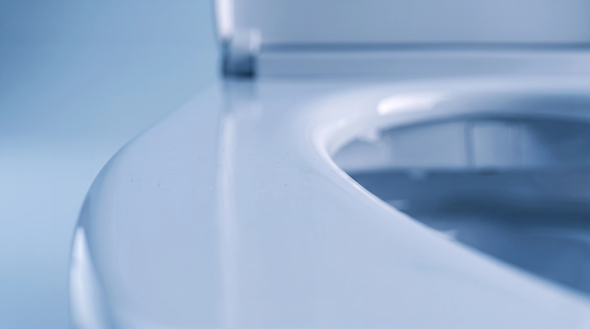
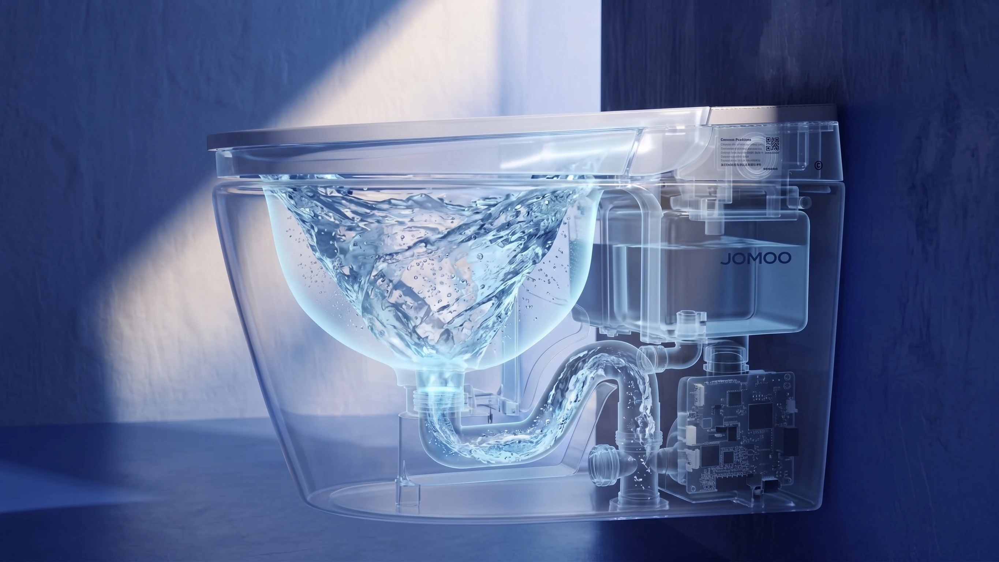
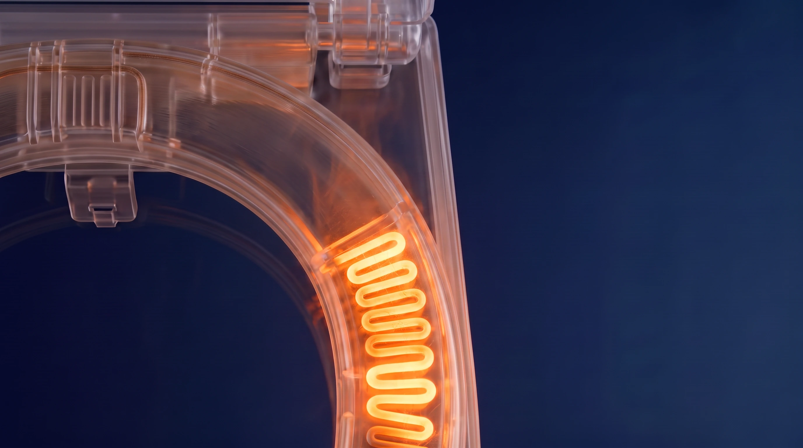
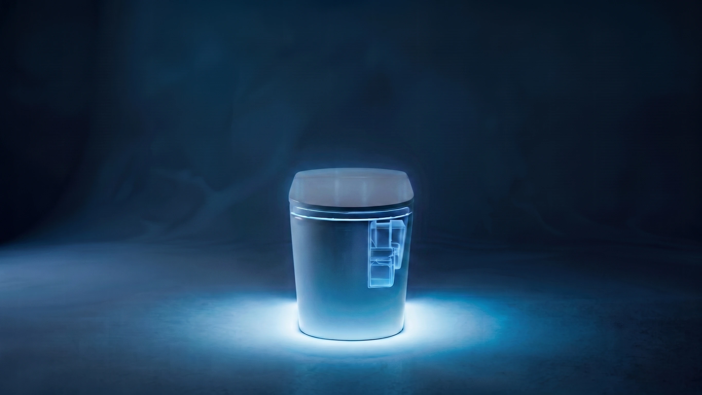
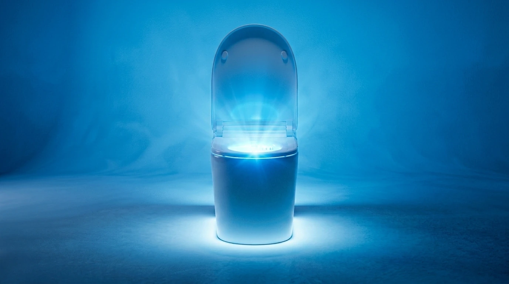

3D + AI / УДАЛЁННЫЙ ПРОДАКШЕН
АВГУСТ — СЕНТЯБРЬ 2026
Как сделать AI-ролик?
Для премиум-унитазов,
если вы их никогда не видели
Кейс запуска технологичного
флагмана из Китая на рынок РФ
к готовому видео
ЗАДАЧА
Продукт в МосквеКоманда в Казани
Нужно снять проморолики для премиальных умных унитазов JOMOO — китайского технологического флагмана, который только заходит на российский рынок
На момент создания креатива сантехника ещё не поступила в продажу. Сами устройства находились на складе в Москве, а наша команда — в Казани.
МОСКВА / ПРОДУКТКАЗАНЬ / КОМАНДА
ИСХОДНЫЕ МАТЕРИАЛЫ
Всё началось
с фотографий
В доступности — только сырые фотографии, сделанные менеджерами на камеру смартфона прямо на складе


3D-МОДЕЛИРОВАНИЕ
От фотографии
к точной форме
По черновым фотографиям воссоздали точные 3D-модели, чтобы утвердить геометрию и ракурсы


01 / ФОТО02 / ГЕОМЕТРИЯ03 / 3D-РЕНДЕР
ФУНКЦИИ В ДЕТАЛЯХ
Комфорт,
который
видно
За одну минуту нам предстояло передать ощущение абсолютного комфорта и показать все функции, которые делают эти устройства по-настоящему умными
Мы подсветили каждую деталь
01Бесконтактное управление

Чуткие датчики движения и бесконтактное управление ногой
02Антибактериальная глазурь

Идеально гладкая антибактериальная глазурь для безупречной заботы о здоровье
03Tornado Flush

Бесшумная, но мощная система смыва Tornado Flush
04Подогрев сиденья

Подогрев сиденья
05Встраиваемый бачок

Элегантный встраиваемый бачок, который сохраняет визуальную чистоту вашего интерьера
06Деликатная подсветка

И деликатная подсветка
СЦЕНАРИЙ И РАСКАДРОВКА
Сначала история
Потом движение
Написали сценарий и собрали раскадровку на 30+ сцен для каждого ролика
От общей сцены — к взаимодействию, технологии и детали. Кадры раскадровки.
AI-АНИМАЦИЯ / SEEDANCE 2.5
Форма обретает
движение
Анимировали финальный визуальный ряд с помощью Seedance 2.5 — одной из самых сильных нейросетей на момент работы, в августе–сентябре 2026 года
КАДР → ДВИЖЕНИЕ → ГОТОВЫЙ РОЛИКSEEDANCE 2.5 / 00:05
РЕЗУЛЬТАТ
Из фотографий
В полноценное промо
Из фоток на телефон мы создали три полноценных промовидео для трёх разных моделей, две из которых будут продаваться эксклюзивно в России. Проект реализован полностью удалённо, без натурных съёмок.